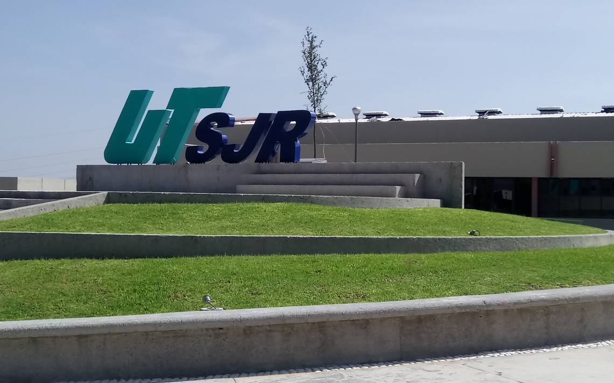

Muy bien, hemos llegado a la parte que podría decirse la más interesante hasta ahora, ésta es mi etapa actual. Me remonto al pasado donde solo imaginar el que iba a ir ya a la Universidad, en donde tenia que escoger que era lo que quería estudiar y o aprender que si bien, desde un principio tuve claro que muy probablemente no me dedicaría, ya que tengo una forma de pensar y planear las cosas que he aprendido y que me ha funcionado hasta ahora, si quieres conocer esta forma de pensar, ve al apartado de “Mi sueño” arriba en el menú. La Universidad, tan solo pensar en ello me traía escalofríos, verdaderamente era un mundo al que iba a enfrentarme, pero aun no tenia defino en que parte lo haría.
La Universidad, tan solo pensar en ello me traía escalofríos, verdaderamente era un mundo al que iba a enfrentarme, pero aun no tenia defino en que parte lo haría. Esta parte es interesante ya que, todo empieza en la secundaria, en donde conocí a mi mejor amigo. Él fue quien tuvo primero la idea de estudiar acá cuando yo ni siquiera tenía pensado en donde estudiaría mi preparatoria. Pasaron los años y quedamos en la misma preparatoria; fue allí cuando realmente me entro esa pasión por querer estudiar aquí, una corazonada talvez, ya que las demás opciones no me llamaban la atención. Puedo decir que esta fue mi única opción porque estaba convencido de que iba a pasar mi examen de admisión y quedar en esta Universidad.
Este es mi edificio principal, desde que entré, ha sido donde he recibido la mayoría de mis clases.
Mi primer cuatrimestre fue el más emocionante, ¡ya soy universitario!, ese era mi único pensamiento, y aun sigue. Gracias a cómo me he esforzado, he podido salir delante de la mejor manera posible. Afortunadamente convivo con un grupo en donde todos podemos ayudarnos y el ambiente es muy bueno, tengo muy buena relación con todos o al menos eso considero. Tengo muchos planes por cumplir, voy por la mitad de esta etapa, aunque quien sabe, puede continuar más adelante. No se que nos espere en el futuro, pero se que será emocionante.
Ellos son el grupo en el que estoy, es una foto de los primeros dias, algunos ya no están pero todavia la conservo.